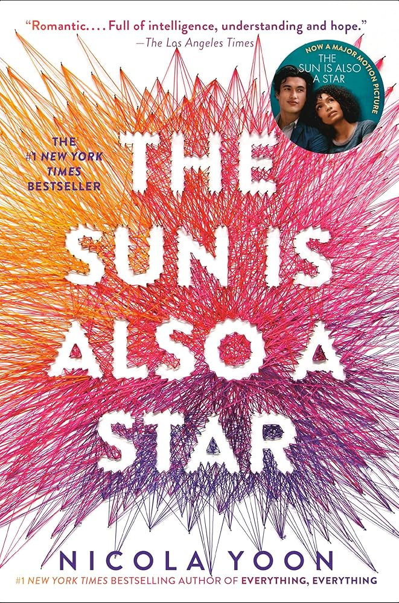
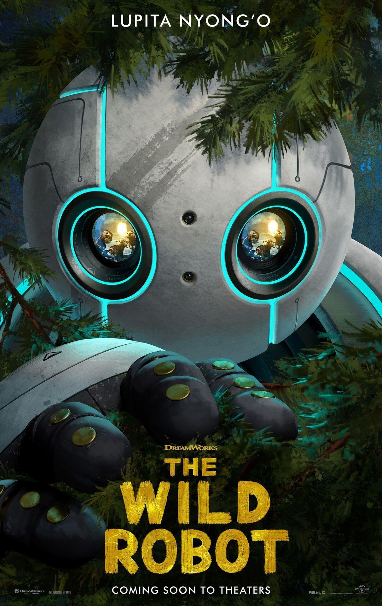
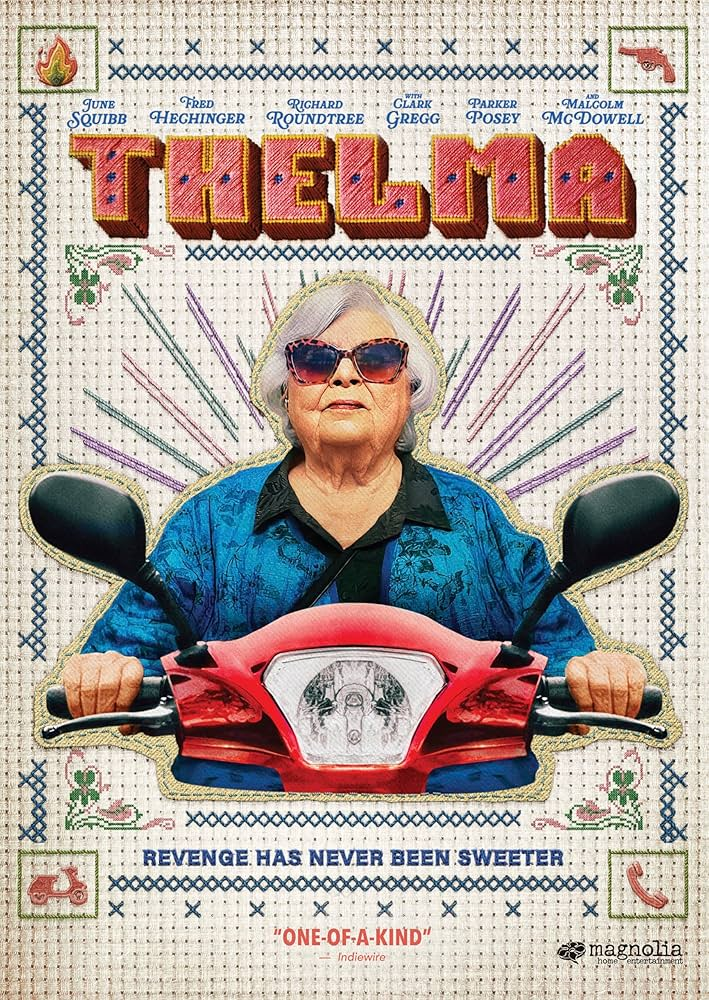
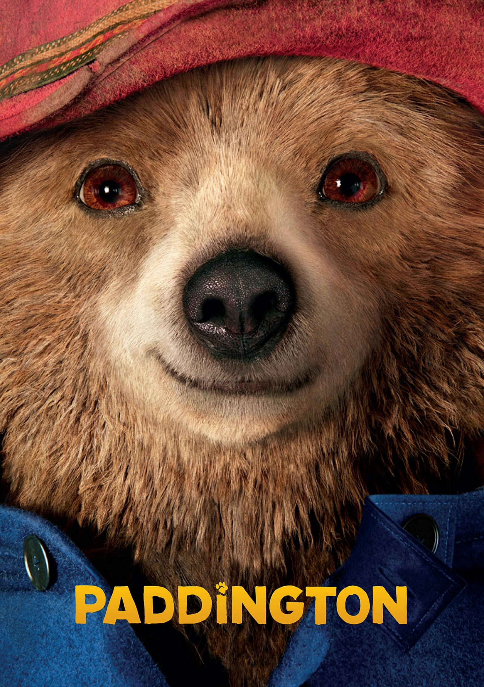
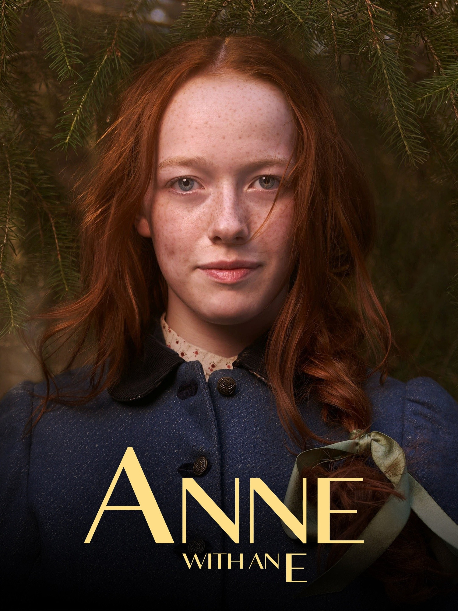
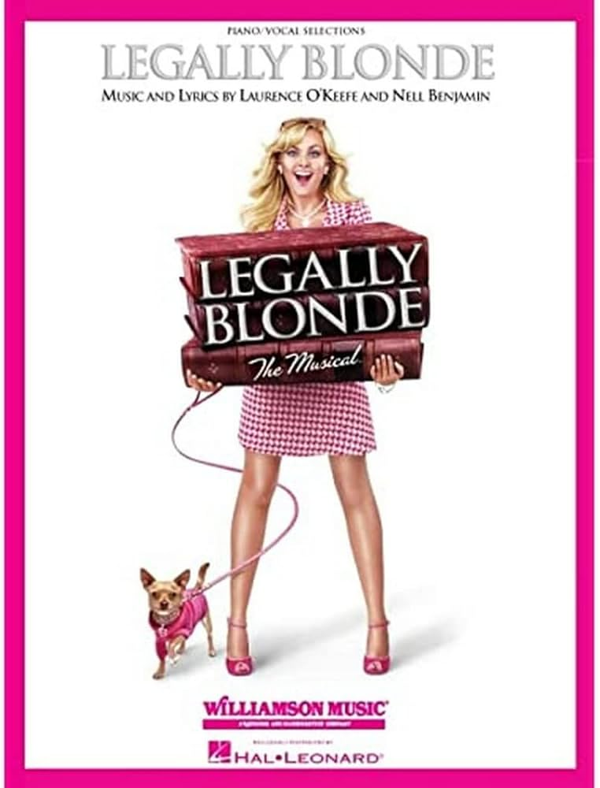

Books
The Sun Is Also A Star
by Nicola Yoon

This book was popular a while ago for good reason. The writing and story are beautiful, reminding readers to fall in love with the world, regardless of if everything turns out well or not. This book pumps hope straight into your veins and is perfect for defrosting from a cold winter.
The Anthropocene Reviewed
by John Green

The only non-fiction on this list, Anthropocene Reviewed can only be described as gorgeous. The essays are quick and full of John Green's humor and hope. He narrates the audiobook, so I recommend that as well; his soothing voice underscores his relentless optisism.
Station Eleven
by Emily St. John Mandel

I was considering putting Station Eleven in the winter category, but the hope it left me with pulled it into spring. This pre, inter, and post apocalyptic story weaves together a wonderful cast of characters and reminds us of the beauty of the world and why we bother to live through the hard parts of life.
Movies
The Wild Robot
This is a kids' movie, but I cried through basically the entire third act. Adapted from a book, this movie follows a home robot crashed on a wilderness island who learns how to be a mother. Everything about this film is beautiful from the animation to the score and the humanity of the film is so real that it bleeds. I promise that it's worth your time.
Thelma
I love everything about this movie. Following an old woman who is scammed and will not stand for it, the story is filled with adventure and heart. It reflects on what it means to be old and young and reminds viewers that we're all just doing out best. You'll be reminded of someone in your life, guaranteed.
Paddington
This kids' movie had absolutely no business being as good as it was. Packed with whimsy and reflections on family, this story brings a young bear and a proper Britich family together. Watch it with your kids and your friends alike and feel your heart thaw out.
TV Shows
How To Keep A Mummy

This short little anime is delightful and perfect for anime newbies. Lighthearted and loving, this adorable romp delivers a bite-sized mummy to a high school student who soon becomes a doting caretaker. Break out of winter with laughter with this show.
Anne With An E
More serious, this show is an adaptation of the Anne of Green Gables books. It follows a spunky and imaginative young orphan, the family she finds, and the friends she makes as she learns and grows into a young woman. Watch Anne come of age as the snow melts.
Musicals
Legally Blonde
Based on the also-amazing movie, this musical is one of my absolute favorites. The songs are so fun, and there's even a hilariously poor-quality MTV recording to watch if you can't make it to the theater (no pirating involved). Follow Elle on her pink-tinted rise through law school and learn some deliciously catchy songs.